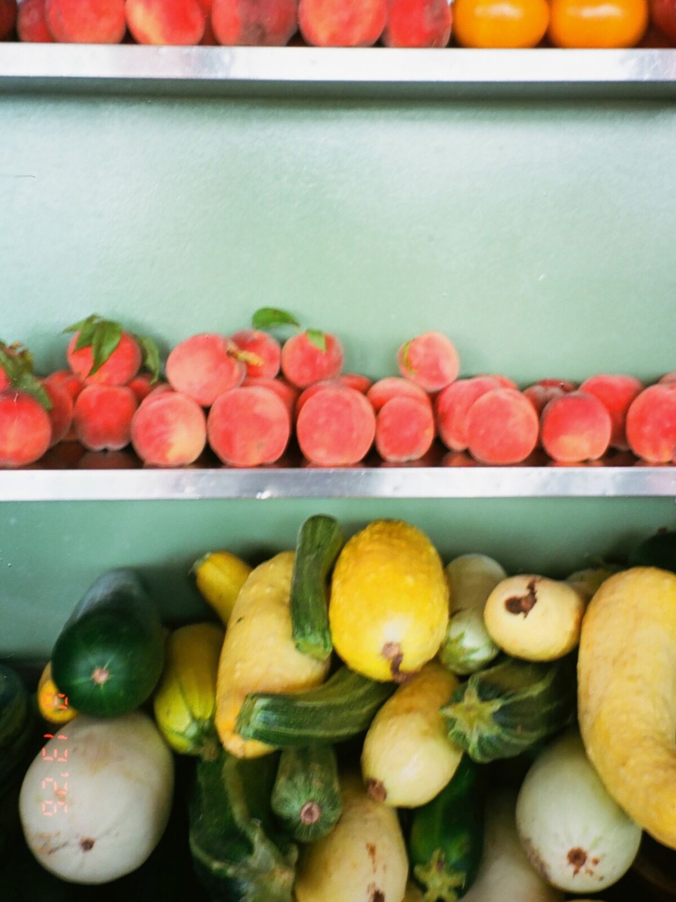

Press
Other people’s words.
Awards and reviews since the room reopened in 2025, with links to the originals.
- Detroit Free Press2026 Restaurant of the Year
- The New York Times50 favorite restaurants in America
- The Detroit NewsThree stars
- Hour DetroitBest New Restaurants 2026
What they wrote
Eating here feels a bit like having a meal in Grandma's sunroom.The New York Times · 50 favorite restaurants in America, September 2026
A coming-of-age story.Detroit Free Press · 2026 Restaurant of the Year, February 2026
I just realized how much I love that space.Molly Mitchell to Hour Detroit · Best New Restaurants 2026
He orchestrates it all like a dance.Molly Mitchell on Aaron Rush, to Pride Source · September 2026
Read them
Press inquiries
Ask for Molly or Aaron.
Call the restaurant or message the Instagram account, and we will get you what you need.
Placeholder in this concept: a real press page would carry a press email and a downloadable image pack.

Best to book ahead.
Thirty days out on Resy. Walk-ins welcome, and the counter turns.